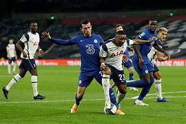
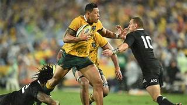
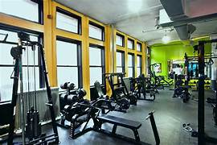
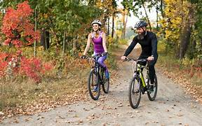

Sports
Lets get healthy and fit together

Different sports
Having a sport in your life from a young age until now can drastically help you mentally, physcially and you can become more healthy along the way. there are many different sports to undertake while pursing a healthy lifestyle
Football:Football refers to a popular team sport played between two teams of eleven players each. The objective is to score goals by getting a ball into the opposing team's goalpost. Football, known as soccer in some regions, is played on a rectangular field with goals at either end. Players, except goalkeepers, primarily use their feet to kick the ball but can also use other parts of their bodies except for their hands or arms. The team that scores the most goals by the end of the match wins.
Rugby:Rugby is a team sport that originated in England in the 19th century and has since evolved into various forms, with rugby union and rugby league being the two major codes. In both versions of the game, the objective is to score points by carrying, passing, kicking, or grounding the ball over the opponent's goal line.
Different activities
There are also different activities that can be taken up to achieve a healthy mind and body.
Gym:Joining a gym is can be benefical in many ways and is also the most sought out activity by teenagers and young adults around the world. It is seen as a safe place to get exercise in and is also a place of encouragement seeing others progession as they get stronger and stronger day by day gives ypu the motivation to keep going to get stronger and be a better version of yourself.
Cycling:Cycling is a low-impact aerobic exercise that offers numerous health benefits. It enhances cardiovascular health by improving heart function and reducing the risk of diseases like stroke and hypertension. Regular cycling aids in weight management, tones muscles—especially in the lower body—and improves joint mobility. Beyond physical benefits, cycling contributes to mental well-being, reducing stress and promoting a positive mood. It's an eco-friendly mode of transportation that also encourages social interaction, making it a versatile and enjoyable activity suitable for people of all ages.